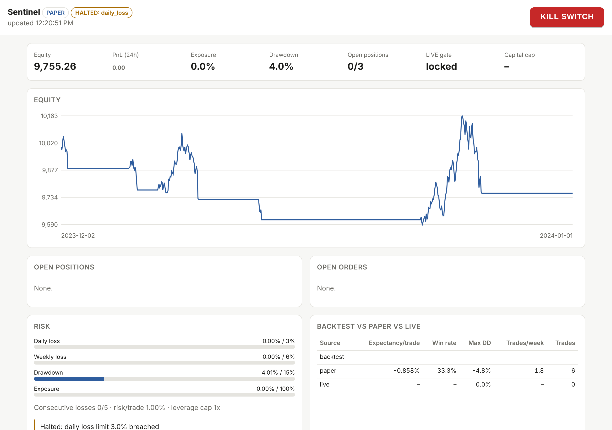
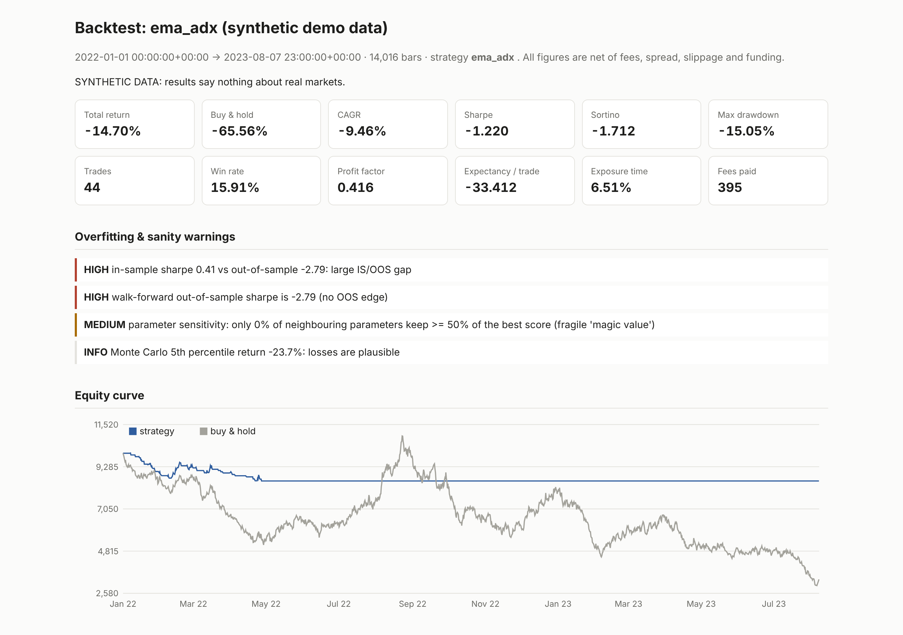

Sentinel is a private, self-hosted trading bot with an honest backtester, an independent risk manager that must sign every order, a kill switch, and a LIVE mode that stays locked until weeks of paper trading prove it's ready.

Every strategy walks the same path. Sentinel enforces each step in code, not in a README.
Next-bar fills, fees, spread, slippage, funding, partial fills, exchange rules.
Walk-forward, an untouched 20% holdout, Monte Carlo, sensitivity heatmaps.
Live public prices, simulated fills, the real risk manager, 8+ weeks.
9 checks: duration, trade count, drift vs backtest, drawdown, tests, kill-switch drill, key safety…
Starts with a small capital cap, raised only in steps, only while live matches paper.
The backtester, paper trader and live trader run the same Trader, RiskManager and OrderManager classes. The risk manager issues an HMAC-signed, single-use, size-budgeted approval. The broker base class verifies it before anything reaches a venue, and a test scans the code to prove there's no other path.
Event-driven and bar-by-bar. Orders fill on the next bar, never the signal bar. Market, limit, stop, stop-limit, trailing, take-profit and OCO orders. Partial fills by volume.
Fixed-fractional, ATR or capped-Kelly sizing. Per-asset, total and leverage caps; a correlation check; daily, weekly and drawdown halts; circuit breakers; a mandatory stop on every position.
From the command line or the dashboard: cancel every order, optionally flatten, and lock the bot until a manual re-enable after a cooldown.
Over 25 indicators that match pandas-ta to about 1e-12, multi-timeframe features, and a regime classifier. A test that truncates and perturbs the data runs on every feature and every strategy.
Drop a file into plugins/. Five baselines are included, plus a vote or weighted ensemble and a regime filter. Every strategy is compared against buy & hold.
Triple-barrier meta-labelling, purged and embargoed cross-validation, calibration, SHAP and drift checks. It stays off unless it beats the baseline out-of-sample after costs.
Idempotent order IDs, retries with no duplicates, reconciliation that halts on any mismatch, crash recovery, limit-first and TWAP execution, and tick/lot precision.
Keys live in an argon2id + Fernet vault and are redacted from logs. Keys with withdrawal rights are refused. No telemetry, local-only LLM, and a dashboard bound to localhost.
Hardened Docker Compose, a systemd unit, VPS hardening, encrypted backups, an NTP check, daily reports, opt-in Telegram and email alerts, and a runbook for every incident.
Everything below came from actually running Sentinel on its bundled synthetic dataset (2026-11-23). Nothing is mocked up.
A clickable, read-only snapshot of the dashboard after a 700-bar paper-trading session. It shows equity 9,755.26 from a 10,000 start, 6 trades, the risk panel, the trade journal (features and risk checks per trade), and the halts it triggered.

EMA crossover + ADX with walk-forward optimisation, Monte Carlo, a sensitivity heatmap, a market-period breakdown and an untouched holdout. It is flagged as overfit by its own warnings.
LIVE stays locked. This is the gate doing its job, and the output below is real.
No API keys and no network needed for the demo.
$ sentinel demo --quick
== 1/4 backtest (synthetic data, 2 years of 1h bars, 2 symbols) ==
return -14.70% vs buy&hold -65.56%, sharpe -1.22, max DD -15.05%, trades 44
== 2/4 ML meta-label filter (deploys only if it beats the baseline OOS) ==
beats baseline: False -> refused: model did not beat the baseline out-of-sample after costs
== 3/4 paper trading (replay of the last 300 synthetic bars) ==
paper (demo replay): 300 synthetic bars x 2 symbols ...
done: equity 10145.31 (start 10000.00), positions {}, trades 2
== 4/4 LIVE readiness gate (expected to FAIL: no 8 weeks of paper trading) ==
[FAIL] paper_duration 0.0 continuous weeks (need 8.0); last heartbeat 0.0h ago
[FAIL] paper_trades 2 closed trades (need 50)
[FAIL] paper_matches_backtest no saved backtest expectations (run `sentinel backtest --save-expectations`)
[PASS] paper_drawdown paper max drawdown 4.0% (limit 15%)
[FAIL] positive_expectancy paper 1.5489%/trade, out-of-sample backtest n/a/trade (both must be > 0 after fees)
[PASS] reconciliation_clean 0 unresolved reconciliation errors
[FAIL] tests_pass test suite not run
[FAIL] kill_switch_tested never tested (run `sentinel kill --test` while paper trading)
[FAIL] api_key_safe trade=None withdraw=None ip_whitelist=None (not checked)
$ sentinel live --confirm "I understand that I can lose real money"
LIVE refused: LIVE is locked: readiness gate has not passed (run `sentinel gate`)
$ sentinel paper --demo --max-bars 120
paper (demo replay): 120 synthetic bars x 2 symbols ...
done: equity 10092.06 (start 10000.00), positions {'SYNTH-ETH/USDT': 7.75664115741131, 'SYNTH-BTC/USDT': 0.5905438425575434}, trades 2
$ sentinel kill --yes --test
kill executed directly: {'cancelled': 2, 'closed': ['SYNTH-ETH/USDT', 'SYNTH-BTC/USDT']}
bot LOCKED. Investigate, then `sentinel unlock`.The bundled dataset is a regime-switching random walk with no real edge in it. A trustworthy backtester has to show that strategies can't beat costs there. If one looked great, that would point to a bug.
| Strategy | Dev return | Buy & hold | Walk-forward OOS | IS → OOS Sharpe | Holdout return | Max DD | Trades |
|---|---|---|---|---|---|---|---|
| buy_hold | -1.6% | -65.6% | – | – | -2.1% | -1.6% | 2 |
| ema_adx | -14.7% | -65.6% | -17.7% | 0.48 → -0.95 | 1.9% | -15.0% | 44 |
| rsi_bb | -14.6% | -65.6% | 5.9% | 1.20 → 0.47 | -6.0% | -15.9% | 144 |
| donchian | -15.1% | -65.6% | -17.6% | 0.04 → -0.78 | -15.9% | -15.1% | 59 |
| vol_momentum | -15.1% | -65.6% | -20.0% | -0.48 → -1.84 | -15.2% | -15.6% | 79 |
| supertrend_mtf | -14.2% | -65.6% | -39.1% | -0.85 → -2.70 | -8.9% | -15.0% | 54 |
Losses cluster near -15% because the risk manager's drawdown halt stops trading there.
Run the same pipeline on real data with sentinel data download and
sentinel backtest --walk-forward, and trust only out-of-sample and holdout numbers.
Full performance report →
Python 3.11+. The demo needs no API keys and no network. Paper trading uses public prices only.
git clone https://github.com/MuhammadHaiderAbbas/TradingSystem.git
cd TradingSystem
python3 -m venv .venv && . .venv/bin/activate
pip install -e ".[all,dev]"
cp config/sentinel.example.yaml config/sentinel.yaml
sentinel init # encrypted vault + state
sentinel demo # backtest, ML check, paper, gate
make test # 210 tests
# real data, paper trading, dashboard
sentinel data download --timeframe 1h
sentinel backtest --strategy ema_adx --walk-forward
sentinel paper
sentinel dashboard --set-password && sentinel dashboard